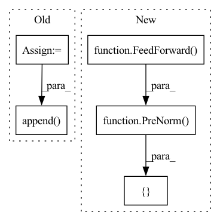

Pattern ID :4827

Before Change
self.layers = nn.ModuleList([])
for _ in range(depth):
layer = Residual(PreNorm(dim, AdjacentAttention(
dim = dim,
dim_head = dim_head,
heads = heads
)))
self.layers.append(layer)
def forward(self, x, adjacency_mat, mask = None):
device = x.device
After Change
self.layers = nn.ModuleList([])
for _ in range(depth):
self.layers.append(nn.ModuleList([
Residual(PreNorm(dim, AdjacentAttention(
dim = dim,
dim_head = dim_head,
heads = heads
))),
Residual(PreNorm(dim, FeedForward(
dim = dim
)))
]))
def forward(self, x, adjacency_mat, mask = None):
device = x.device
In pattern: SUPERPATTERN
Frequency: 3
Non-data size: 5
Instances
Fragment ID: 17047468
Project Name: lucidrains/adjacent-attention-network
Commit Name: fa7a72d7d257d72c159b59572297133ee91905cb
Time: 2020-12-13
Author: lucidrains@gmail.com
File Name: adjacent_attention_network/adjacent_attention_network.py
M Class Name: AdjacentAttentionNetwork
N Class Name: AdjacentAttentionNetwork
M Method Name: __init__(1)
N Method Name: __init__(1)
M Parent Class: nn.Module
N Parent Class: nn.Module
M File Name: adjacent_attention_network/adjacent_attention_network.py
N File Name: adjacent_attention_network/adjacent_attention_network.py
M Start Line: 103
M End Line: 111
N Start Line: 114
N End Line: 126
'>
Before Change
if not receives_context:
continue
layer = nn.ModuleList([
PreNorm(dim, SelfAttention(dim, heads, one_kv_head = one_kv_head, psi_fn = psi_fn, receives_context = True)),
PreNorm(dim, Chunk(ff_chunks, FeedForward(dim), along_dim = 1))
])
layers.append(layer)
execute_type = ReversibleSequence if reversible else SequentialSequence
attn_context_layer = ((True, False),) if receives_context else tuple()
After Change
]))
if attend_axially:
layers.append(nn.ModuleList([
PreNorm(dim, FoldAxially(local_attn_window_size, SelfAttention(dim, heads, causal, one_kv_head = one_kv_head, psi_fn = psi_fn))),
PreNorm(dim, Chunk(ff_chunks, FeedForward(dim), along_dim = 1))
]))
if receives_context:
layers.append(nn.ModuleList([
'>
Fragment ID: 17047469
Project Name: lucidrains/linear-attention-transformer
Commit Name: 1e04f31292ccbe233d2b9a8bc0b6f21c0f66f071
Time: 2020-06-09
Author: lucidrains@gmail.com
File Name: linear_attention_transformer/linear_attention_transformer.py
M Class Name: LinearAttentionTransformer
N Class Name: LinearAttentionTransformer
M Method Name: __init__(18)
N Method Name: __init__(17)
M Parent Class: nn.Module
N Parent Class: nn.Module
M File Name: linear_attention_transformer/linear_attention_transformer.py
N File Name: linear_attention_transformer/linear_attention_transformer.py
M Start Line: 322
M End Line: 351
N Start Line: 336
N End Line: 374
'>
Before Change
should_cache = i > 0 and weight_tie_layers
cache_args = {"_cache": should_cache}
self_attns = nn.ModuleList([])
for _ in range(self_per_cross_attn):
self_attns.append(nn.ModuleList([
get_latent_attn(**cache_args),
get_latent_ff(**cache_args)
]))
self.layers.append(nn.ModuleList([
get_cross_attn(**cache_args),
get_cross_ff(**cache_args),
self_attns
]))
self.decoder_cross_attn = PreNorm(queries_dim, Attention(queries_dim, latent_dim, heads = cross_heads, dim_head = cross_dim_head), context_dim = latent_dim)
self.decoder_ff = PreNorm(queries_dim, FeedForward(queries_dim)) if decoder_ff else None
After Change
super().__init__()
self.latents = nn.Parameter(torch.randn(num_latents, latent_dim))
self.cross_attend_blocks = nn.ModuleList([
PreNorm(latent_dim, Attention(latent_dim, dim, heads = cross_heads, dim_head = cross_dim_head), context_dim = dim),
PreNorm(latent_dim, FeedForward(latent_dim))
])
get_latent_attn = lambda: PreNorm(latent_dim, Attention(latent_dim, heads = latent_heads, dim_head = latent_dim_head))
get_latent_ff = lambda: PreNorm(latent_dim, FeedForward(latent_dim))
'>
Fragment ID: 17047466
Project Name: lucidrains/perceiver-pytorch
Commit Name: dc530de88e6035a2f08d7e35ce23e57abe8371bd
Time: 2021-08-30
Author: lucidrains@gmail.com
File Name: perceiver_pytorch/perceiver_io.py
M Class Name: PerceiverIO
N Class Name: PerceiverIO
M Method Name: __init__(1)
N Method Name: __init__(1)
M Parent Class: nn.Module
N Parent Class: nn.Module
M File Name: perceiver_pytorch/perceiver_io.py
N File Name: perceiver_pytorch/perceiver_io.py
M Start Line: 126
M End Line: 152
N Start Line: 125
N End Line: 143